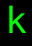

記号 k のモンスター / Monsters with symbol k
画面上で k と表示されるモンスター（16 種）。
Monsters displayed as k on screen (16).
← 記号から探す / Browse by symbol · モンスター索引 / Index
| ID | 記号 / Sym | 名前 / Name | 階層 / Lv | 希少度 / Rar | 速度 / Spd | 体力 / HP | AC | 経験値 / Exp |
|---|---|---|---|---|---|---|---|---|
| 29 |  |
スモール・コボルド Small kobold |
1 | 1 | 110 | 2d7 | 16 | 10 |
| 30 | コボルド Kobold |
3 | 1 | 110 | 5d5 | 16 | 5 | |
| 102 | ラージ・コボルド Large kobold |
5 | 1 | 110 | 13d9 | 32 | 25 | |
| 135 | コボルド・ロード『ムガッシュ』 Mughash the Kobold Lord |
7 | 3 | 110 | 15d10 | 20 | 100 | |
| 1111 | ファイア・コボルド Fire kobold |
12 | 1 | 110 | 12d10 | 35 | 42 | |
| 1112 | アイス・コボルド Ice kobold |
12 | 1 | 110 | 12d10 | 35 | 42 | |
| 1113 | サンダー・コボルド Electric kobold |
12 | 1 | 110 | 12d10 | 35 | 42 | |
| 1114 | アシッド・コボルド Acid kobold |
12 | 1 | 110 | 12d10 | 35 | 42 | |
| 1115 | ポイズン・コボルド Poison kobold |
14 | 1 | 115 | 13d11 | 45 | 55 | |
| 1116 | フレイム・コボルド Flame kobold |
23 | 1 | 110 | 20d10 | 40 | 240 | |
| 1117 | ブリザード・コボルド Blizzard kobold |
23 | 1 | 110 | 20d10 | 40 | 240 | |
| 1118 | ライトニング・コボルド Lightning kobold |
23 | 1 | 110 | 20d10 | 40 | 240 | |
| 1119 | カルボラン・コボルド Carborane kobold |
23 | 1 | 110 | 20d10 | 40 | 240 | |
| 1120 | アポトキシン・コボルド Apotoxin kobold |
24 | 1 | 115 | 21d11 | 45 | 333 | |
| 1121 | ジャイアンの腰巾着『スネヲ』 Suneo, the Follower of Jaian |
25 | 1 | 120 | 35d20 | 50 | 410 | |
| 1032 | 『マダム・デビ』 Madame Debby |
51 | 3 | 120 | 24d100 | 100 | 16000 |
🤖 このページは
lib/edit/MonraceDefinitions.jsoncから自動生成されています。手動で編集しないでください — 変更は次回の再生成で上書きされます。 This page is auto-generated fromlib/edit/MonraceDefinitions.jsonc. Do not edit by hand — changes are overwritten on regeneration. 生成 / Generated: 2026-07-04 00:01 UTC · hengband5ebae9734·tools/generate-wiki.mjs